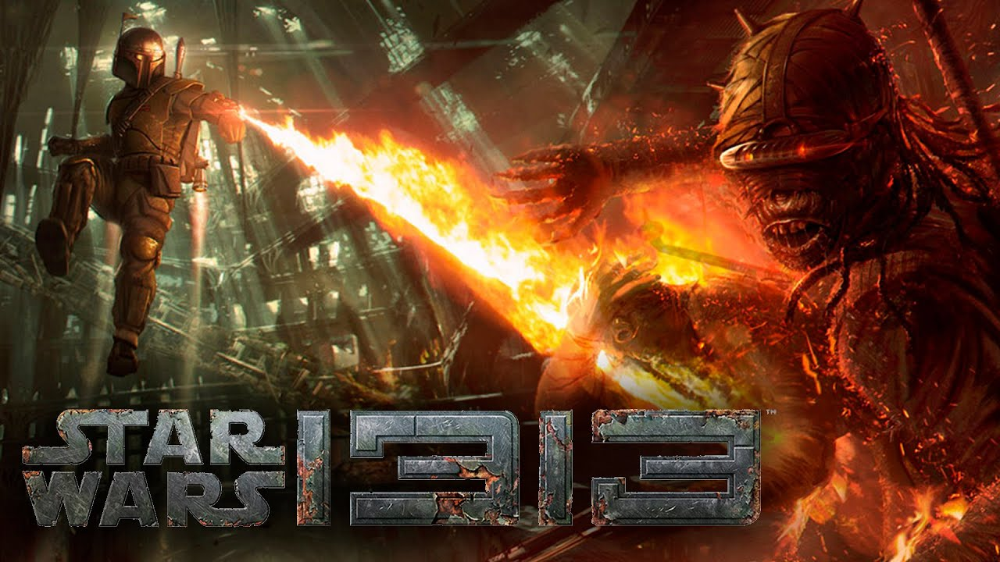

Imaginad lo que ocurriría si mezcláramos la acción frenética de la saga Uncharted con una aventura de Star Wars protagonizada por Boba Fett. Eso es lo que iba a ser 1313, bueno, hasta que Disney compró Lucas Arts y el proyecto quedó relegado a la cancelación. Si os sirve de consuelo, al menos parece que Visceral Games, los responsables de Dead Space, están trabajando en un título de acción en tercera persona Triple-A que podría beber directamente de las cenizas de este proyecto para que no llegue a perderse del todo. Este misterioso título parece que va a estar protagonizado por Han Solo.
Visto el enorme tiempo de desarrollo que le llevó al primer título y todos los problemas que existieron con el mismo, no era de extrañar que su secuela fuera a sufrir un destino similar. Prey 2. El desarrollo cayó en manos de Bethesda, que luego se lo pasó a Arkane Studios y quien finalmente terminó cancelando de forma abrupta. Sin embargo, en estas semanas previas al E3 2016 han surgido rumores sobre la posible sorpresa que el título podría dar en la feria, ya que se está especulando sobre su regreso sorpresa por todo lo alto.

Un juego que de haber visto luz hubiese sido de lo mejorcito en cuanto a juegos de guerra. Un juego basado en la guerra de Irak, en el que encarnamos a un soldado estadounidense en la guerra de Fallujah, este juego prometía ser mucho más que un simple juego de guerra. La idea nació ya que después de la finalización de la guerra, un soldado que participó en la misma se acercó a Atomic Games, esta, recibió la oferta de brazos abiertos y se pusieron a trabajar codo a codo. Cuando el juego estaba en fase final, salió a la luz y muchos militares que estuvieron en la guerra de Irak se opusieron a la idea y se decidió cancelar el videojuego ya que todo era demasiado reciente. Esto provocó que Atomic Games entrase en bancarrota y acabará cerrando sus oficinas.

Un juego similar a los de la saga de Konami, Silent Hill, un juego que prometía mucho, pero debido a diferentes incidentes como la salida de Hideo Kojima de la compañía Konami.
.jpg)